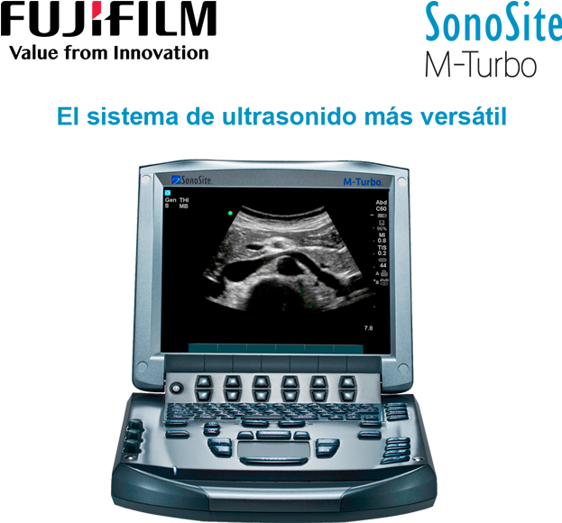

Sonosite M-turbo
Alta resolución de imagen en Point of Care

Registro Sanitario: 0577E2015 SSA
DESCRIPCIÓN:
El sistema M-TURBO está diseñado para ofrecer durabilidad, facilidad de uso y una calidad de imagen incomparable. Sus patentes optimizan diversos parámetros de imagen a fin de proporcionar información esencial con la máxima rapidez y sencillez.
Tecnología SONOSITE:
SonoADAPT: Optimización de tejidos. Elimina la manipulación complicada de múltiples controles.
SonoHD: Es el resultado de la combinación del aumento del poder de procesamiento y de imagen realzada por algoritmos que reducen el ruido en la imagen mientras se mantiene y define la información del tejido.
SonoMB: Es una técnica propietaria de imágenes compuestas que utilizan el manejo electrónico de la angulación de los haces del ultrasonido para rápidamente adquirir escaneos superpuestos de un objeto desde diferentes líneas de visión.
Visualización avanzada de la aguja: Software que mejora las estructuras lineales dentro de un intervalo de ángulos seleccionado en el plano de la ecografía.
Tecnología coloHD: Incrementa valores como potencia de color, sensibilidad y velocidad del cuadro brindando mayor información diagnóstica.
CARACTERÍSTICAS:
- Excelente calidad de imagen.
- Resistente a caídas de hasta 91 cm.
- Rápido arranque.
- Fácil de operar.
- Conectividad inalámbrica.
|
APLICACIONES DE POINT OF CARE |
|
|
|
M-TURBO |
|
Anestesia |
|
|
Medicina crítica |
|
|
Cardiología |
|
|
Urgencias |
|
|
Músculo-esquelético |
|
|
Ginecología y obstetricia |
|
|
Radiología |
|
|
Vascular |
|
|
Salud de la mujer |
|
|
Enfermedades cardiovasculares |
|
DATOS COMPLEMENTARIOS: En FUJIFILM de México queremos convertirnos en su mejor aliado, es por eso que estamos comprometidos con nuestros clientes y ofrecemos el mejor servicio posventa.
FUJIFILM DE MÉXICO, S.A. de C.V.
Teléfono: (55) 5263-5500
e-mail: ultrasonido@fujifilm.com.mx
www.fujifilm.com.mx